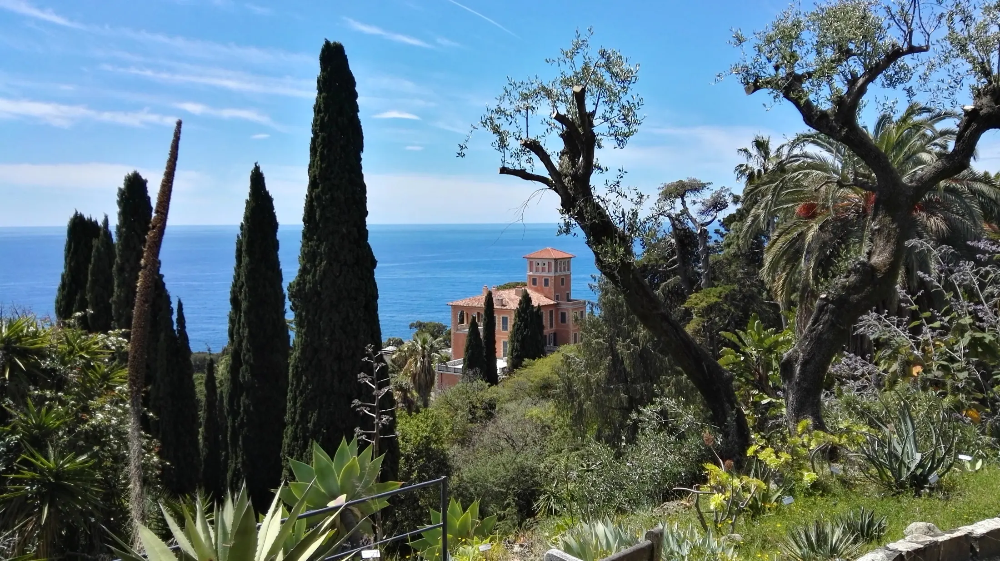

Ligurië, praktisch op de grens met Frankrijk
Olivetta & omgeving
Olivetta ligt in Ligurië, praktisch op de grens met Frankrijk, aan het riviertje de Bevera.
Olivetta ligt tussen de Alpi Marittime en de zee.
Dit zijn de uitlopers van de Alpi Marittime, een berg- en bosachtig gebied, met veel olijfbomen en de vermaarde taggiasca olijf.
Het dal van de Bevera is uniek: dit riviertje stroomt vanuit de Mercantour in Frankrijk via Olivetta naar de kust door een dal dat alleen via wandelpaden toegankelijk is. Vanuit Olivetta loopt een verharde weg tot aan het idyllische Bussare, een klein gehucht dat onder de comune Olivetta valt.
Olivetta ligt op ongeveer 15 minuten lopen en heeft een dorpsplein met een bar en terras, een kleine supermarkt van Mario en een winkeltje met lokale producten van Bruno. In de zomer zijn er dorpsfeesten in Olivetta en in de omgeving, vaak met gezamenlijke maaltijden en soms met muziek.

Weer in Olivetta
Temperatuur de komende dagen.
Live verwachting voor Olivetta San Michele wordt geladen.
Nu
--°
Bezig met laden
Wat is er dichtbij?
Het huis ligt in het schilderachtige dal van de Bevera. Je kunt hier en vanaf allerlei plekken in de buurt prachtige wandelingen maken.
Wandelen
Maak wandelingen naar Collebassa, Torri en Piene Haute, of de tocht naar de Grammondo. Via Sospel kun je ook mooie tochten maken naar het Parc National du Mercantour.
Kust
De stranden van de Middellandse Zee bij Menton, Ventimiglia en Bordighera liggen op nog geen 30 minuten rijden. Ventimiglia heeft een mooie oude kern, een grote markt, winkels, bars en restaurants.
Dorpen
Het dal van de Nervia verbindt de kust met het achterland vol authentieke dorpen en stadjes, zoals Dolceaqua, Rocchetta Nervina, Apricale, Bajardo, Pigna en Perinaldo.
Frankrijk
Net over de grens ligt Sospel, een sympathiek Frans bergdorpje. Via het dal van de Roya kun je de Vallée des Merveilles bereiken, waar prehistorische rotsgravures te zien zijn.
Cultuur
Er zijn diverse musea in de omgeving, zoals de Fondation Maeght, het Musée Matisse, Villa Ephrussi en de villa van Eileen Gray bij Menton.
Tuinen
Je kunt ook prachtige botanische tuinen bezoeken: Giardini Hanbury bij Latte, Val Rahmeh en Serre de la Madone in Menton, en de cactustuin Pallanca in Bordighera.
Galerij omgeving
Beelden van het dorp, de kust, tuinen en het landschap rondom Olivetta.